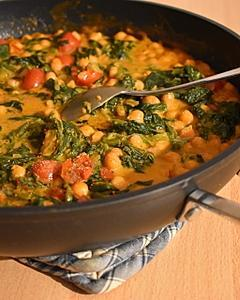

Schnelles Spinat-Kichererbsen-Gericht
Zubereitung
Den Blattspinat auftauen (evtl. in der Mikrowelle) und das Wasser abgießen. Die Zwiebel, den Knoblauch und den Ingwer schälen. Die Tomaten am Stielansatz anschneiden, mit heißem Wasser übergießen und nach kurzer Zeit die Schale abziehen. Wenn es ganz schnell gehen soll, kann man auch gehackte Dosentomaten nehmen. Dafür 1/2 Dose verwenden, aber den Saft unbedingt abgießen, damit das Gericht keinen tomatigen Geschmack und keine rötliche Farbe annimmt.
Die Zwiebel und die Tomaten in Würfel schneiden, (Dosentomaten abgießen), Knoblauch und Ingwer sehr fein hacken.
In einer hohen Pfanne das Kokosöl erhitzen, Zwiebel, Knoblauch und Ingwer hineingeben und glasig dünsten. Spinat, Tomaten und Kokosmilch (inkl. dem Wasser) hineingeben, würzen, einmal gut umrühren und zudecken.
Alles bei schwacher Hitze, leicht blubbernd ca. 10 Min köcheln lassen. Zum Schluss die Kichererbsen dazugeben, verrühren und kurz ziehen lassen. Eventuell nochmal abschmecken und mit Chiliflocken bestreut servieren.
Rezept erstellt von
 André
André